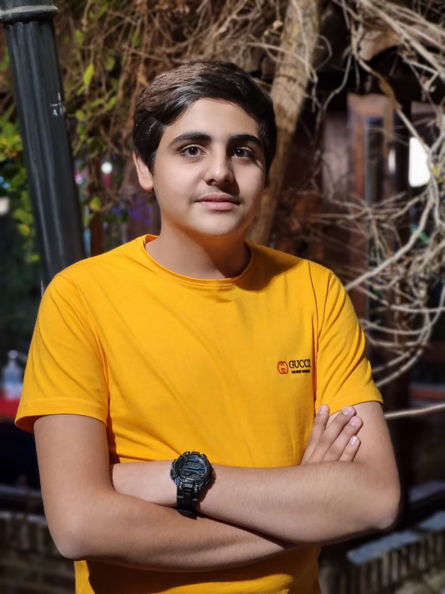

سلام! من علی خسروجردی هستم
|
درباره من
من علی خسروجردی هستم؛ برنامهنویس بکاند و عاشق تکنولوژی! تخصص من توسعه نرمافزار با C# و Asp.Net است. با ابزارهایی مثل Git، Github، Gitlab و Docker پروژههایم را مدیریت و مستندسازی میکنم. عاشق تست و توسعه API با Postman و کار با دیتابیسهای SQL Server و PostgreSQL هستم. یادگیری و حل چالشهای جدید همیشه من را هیجانزده میکند!
مهارتها
ارتباط با من
اگر از نمونه پروژههای من خوشتان آمد و دوست دارید با هم در ارتباط باشید، برای همکاری خوشحال میشوم از راههای زیر با من در ارتباط باشید.